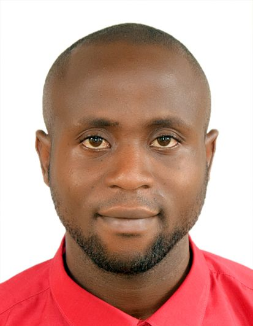

MSc in Geo-Information Science
University of Ibadan, Nigeria
2025
- CGPA: First Class, 6.23/7.00
- Best Graduating Student
- Dissertation: Analysing Urbanisation, Deforestation, and Carbon Flux in Ekiti State, Nigeria using Machine Learning.

Geo-information scientist specialising in remote sensing and GeoAI, with a research focus on geospatial foundation models, Earth observation embeddings, multi-sensor data fusion, and machine learning for forest structure, biomass estimation, and ecosystem monitoring. My research combines conventional Earth observation predictors with learned geospatial representations to investigate vegetation dynamics, carbon cycling, forest degradation, and ecosystem resilience across tropical landscapes.
Geo-information scientist specialising in remote sensing and GeoAI, with a research focus on geospatial foundation models, Earth observation embeddings, multi-sensor data fusion, and machine learning for forest structure, biomass estimation, and ecosystem monitoring. My research integrates conventional multi-sensor Earth observation with learned geospatial representations and foundation-model embeddings to quantify vegetation dynamics, carbon cycling, forest degradation, and ecosystem resilience across tropical landscapes.
Peer-reviewing manuscript submissions by critically evaluating methodology, remote sensing data processing, and ecological modelling validity for publication.
Bejide O.D & Olaniran H.D. (2026). Geospatial modelling of vegetation dynamics and carbon sequestration capacity in Ekiti State, Nigeria, using MODIS data and CASA models. Turkish Journal of Remote Sensing, 8, 1821972. DOI
Olaniran, H. D., & Bejide, O. D. (2025). Achieving ecologically sustainable cities in developing countries: Government environmental rhetoric, actions, and a continuously degrading urban environment. The Nigerian Geographical Journal, Special Issue, 636–657.
Bejide, O. D., Emiola, K. D., Ajewole, O. D., & Olaniran, H. D. Spectral–Structural Divergence in Forest Extent under Land-Use Change: Threshold-Based Assessment Using GEDI LiDAR in Ekiti State, Nigeria. Environmental Monitoring and Assessment. EarthArXiv
Bejide O.D., Emiola K.D. (2026). Assessing canopy height and aboveground biomass dynamics in Southwestern Nigeria using GEDI LiDAR and multi-sensor Earth observation. Environmental Monitoring and Assessment. EarthArXiv
Bejide, O. D. (2026). Assessing Complementary Information from AlphaEarth Foundation Embeddings and Multi-Sensor Data for GEDI-Based Canopy Height Estimation in Southwestern Nigeria, 2020–2025. Journal of Remote Sensing. Preprint
Bejide, O. D. (2026). Spatial Modelling of Long-Term Urban Vegetation Greening and Browning in Ibadan, Nigeria Using Sentinel-1 and Sentinel-2 Time-Series Data. Discover Earth Observation. Preprint
Role: Sole author — conceptualisation, framework development, analysis, writing.
Bejide O.D., Martinez-Lopez J., & Mayesse Da Silva. (2026). Mapping Soil Organic Carbon Sequestration Hotspots and Identifying Suitable Areas for Harvesting SOC Using Deep-Rooting Genotypes in Colombian Orinoquia.
Department of Geography, University of Ibadan, Nigeria
+2348062271591
Department of Geography, University of Ibadan, Nigeria
+234-8021988696